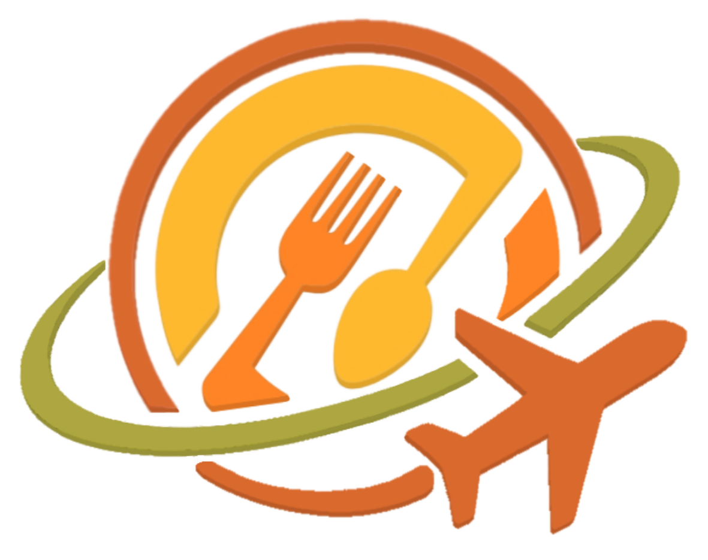
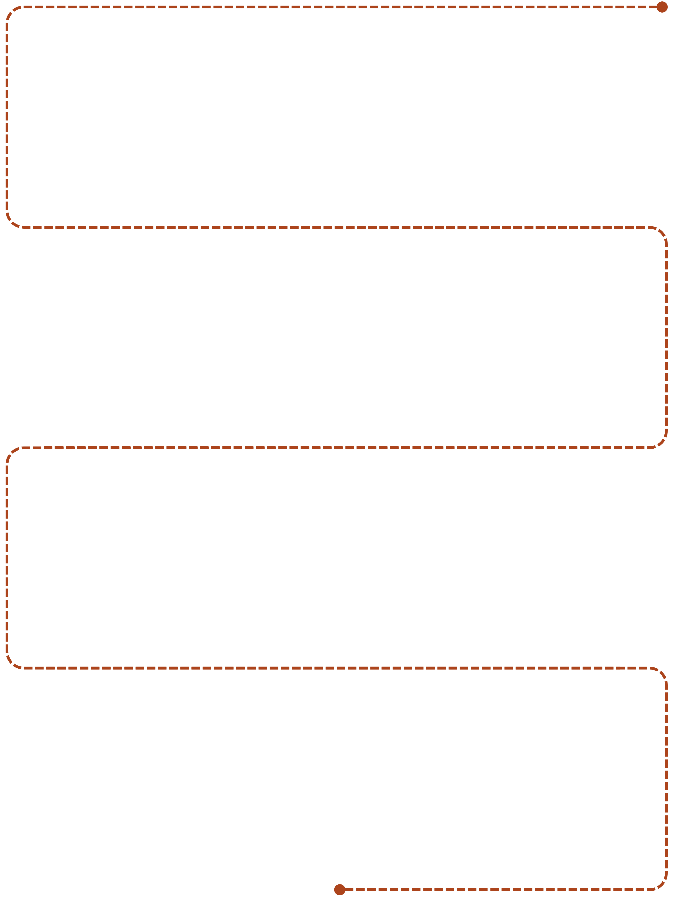
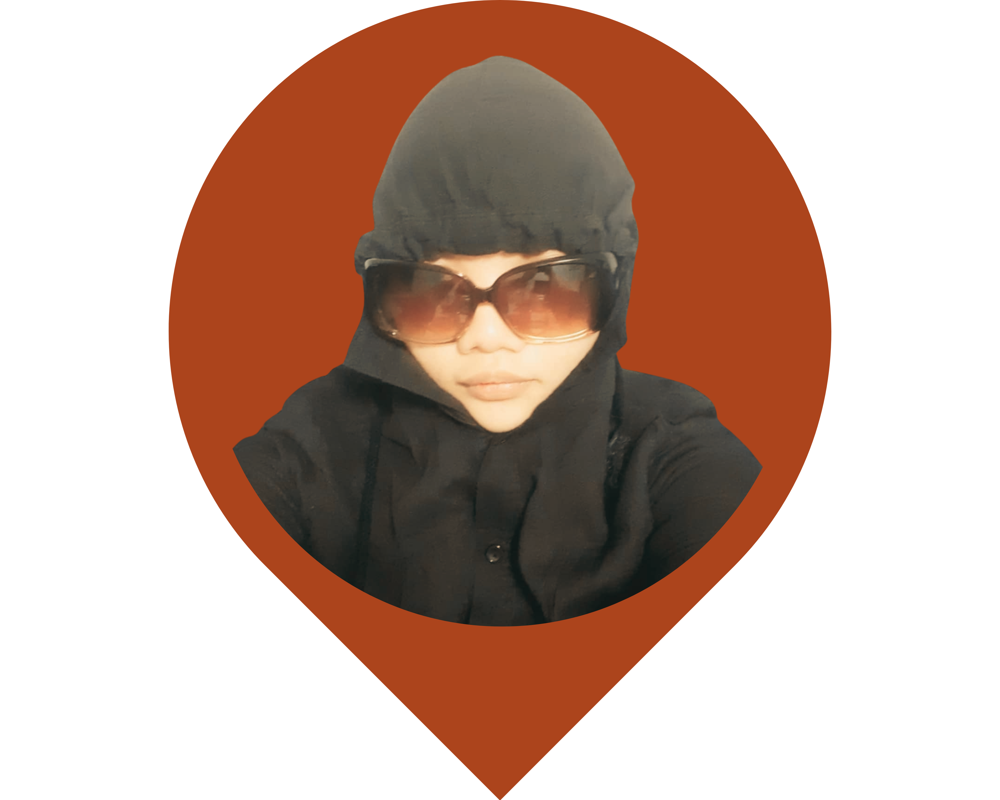

LOCALINARY
Local • Itinerary • Culinary


"Just one click to your next kainventure"
Localinary is your trusty travel buddy—part foodie, part explorer, and 100% Filipino at heart. It’s an itinerary planner designed to help you craft your day with a serving of crispy lechon or a scoop of halo-halo on the side. From finding the best hidden eateries to creating your dream travel lineup, Localinary blends your love for food and travel into one delicious adventure.
Lakad goals? Lamon goals? Why not both?
Let’s tikim every trip with Localinary. (｡ゝᴗ•) ᯓᡣ𐭩
MEET THE LOCALICREW

Roman Aragorn T. Lopez
Backend Developer


Alexia Mae O. Villaverde
Frontend Developer
Nicole G. Laman
System Designer
Sofiel Yrian H. Jarin
Technical Writer